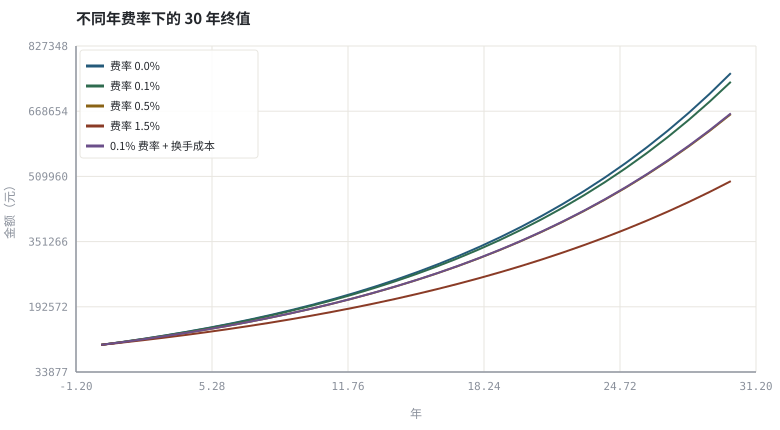

第 05 章账户、费用、税与适当性
毛收益是模型的输出，净收益才是账户的结果；中间隔着一张长长的成本表。
本章位置：产品（第 03 章）与规则（第 04 章）之后，本章补齐账户侧的成本与状态；下一章 第 06 章 · 行情数据模型：OHLCV、复权与时间戳 开始把行情写成可计算的数据结构。
毛收益是算法复杂度 O(f(n))，成本是常数因子和 I/O。在低频、低超额的场景里，常数因子决定一切——这正是工程优化与投资优化的同构之处。
- 能列出一笔交易从下单到到账涉及的全部显式与隐式成本。
- 能把费率、换手率、买卖价差折算成年化拖累。
- 能区分管理费、托管费、申赎费、销售服务费与交易佣金。
- 能说明「资金可用 / 可取 / 份额确认」的时间差。
§知识点地图
每个知识点都配了 1～2 个扩展学习链接；本章完整资源清单见 扩展学习。
| # | 知识点 | 扩展学习 | 状态 |
|---|---|---|---|
| 1 | 证券账户与资金账户 | 中国证券登记结算 · Investor.gov（SEC 投资者教育） | 正文已覆盖 |
| 2 | 佣金与印花税 | Investor.gov（SEC 投资者教育） · Bogleheads Wiki | 正文已覆盖 |
| 3 | 买卖价差与冲击成本 | Bid–ask spread · Market microstructure | 正文已覆盖 |
| 4 | 基金管理费与申赎费 | Mutual fund · Net asset value | 正文已覆盖 |
| 5 | 换手率与年化拖累 | Rate of return · Compound interest | 正文已覆盖 |
| 6 | 份额确认与赎回到账 | 中国证券登记结算 · Investor.gov（SEC 投资者教育） | 正文已覆盖 |
| 7 | 红利税与跨境税务 | Investor.gov（SEC 投资者教育） · Bogleheads Wiki | 正文已覆盖 |
| 8 | 投资者适当性 | 香港证监会 SFC · Investor.gov（SEC 投资者教育） | 正文已覆盖 |
§5.1一张成本清单
| 成本 | 谁收 | 何时发生 | 量级感 |
|---|---|---|---|
| 交易佣金 / 平台费 | 券商 | 每笔成交 | 按成交额或笔数，常有最低收费 |
| 印花税 / 交易税 | 税务或交易所 | 卖出或双向（看市场） | 按成交额比例 |
| 买卖价差 spread | 市场（做市/对手方） | 每次 crossing | 流动性越差越大 |
| 冲击成本 impact | 市场 | 大单拆单时 | 随下单速度上升 |
| 管理费 / 托管费 | 基金管理人 | 按日计提、按月支付 | 年化，直接从净值扣 |
| 申购费 / 赎回费 | 销售机构 | 申赎时 | 持有期越短赎回费常越高 |
| 跟踪误差 | 复制机制 | 持续 | 不是费用，但同样是净收益漏损 |
| 红利税 / 利息税 | 税务 | 分派时 | 与持有期、市场、投资者身份相关 |
把成本分成两类很有用：按时间计提（管理费）与按行为触发（佣金、价差、赎回费）。前者由产品选择决定，后者由换手率决定。降成本的两条路因此完全不同：选低费率产品，或降低交易频率。
§5.2把换手率折算成年化拖累
成本年化拖累 ≈ 年换手率 × (spread + 佣金 + 税费) × 2（双边）
若年换手率 150%、单次双边成本 0.23%，年化拖累约 0.69%。这对一个预期超额收益 1% 的策略是致命的——策略的容量与频率上限，往往由成本而非信号决定。第 26、29 章会把这一项直接写进回测的每次成交。
§5.3账户状态机：可用、可取、在途
下单→ 资金冻结；成交→ 形成持仓与待交收应收应付。交收→ 证券/资金所有权转移；T+n决定何时可卖、何时可提现。- 场外基金走另一条链：
申购申请→份额确认→赎回申请→赎回到账，净值按未知价成交，不能按盘中价格申赎。 - 适当性测评、风险揭示与资产门槛是准入校验，不是策略参数；但会限制可交易集合，必须写进 IPS。
毛收益是纯函数 f(signal, prices)；净收益是有状态的fold(events, account_state)。任何忽略 account_state 的回测都在解一道更简单的题。
§Python 分析实例
实验 5-1 · 费率与换手成本对长期终值的联合侵蚀
#!/usr/bin/env python3
# -*- coding: utf-8 -*-
"""四条不同费率的终值曲线，并把换手成本折算成年化拖累。
数据为合成数据或模型示意，仅用于教学，不构成投资建议。
"""
from __future__ import annotations
import math
import pathlib
import random
import statistics
import sys
sys.path.insert(0, str(pathlib.Path(__file__).resolve().parents[3] / "tools"))
from chart import Chart, candlestick, heatmap, BLUE, RED, GREEN, AMBER
FIG = pathlib.Path(__file__).resolve().parents[1] / "fig"
FIG.mkdir(exist_ok=True)
random.seed(7)
# ---- 参数区 ----
YEARS = 30
R_GROSS = 0.07 # 毛年化收益
FEES = (0.000, 0.001, 0.005, 0.015)
V0 = 100000.0
TURNOVER = 1.5 # 年换手率（双边口径见下）
SPREAD = 0.0010 # 单边价差成本
COMMISSION = 0.0003 # 单边佣金与税费
# ---- 计算与作图 ----
one_way = SPREAD + COMMISSION
annual_drag = TURNOVER * 2 * one_way
xs = list(range(YEARS + 1))
curves = [(f, [V0 * (1 + R_GROSS - f) ** t for t in xs]) for f in FEES]
c = Chart(FIG / "05-fee.svg", "不同年费率下的 30 年终值", xlabel="年", ylabel="金额（元）")
cols = (BLUE, GREEN, AMBER, RED)
for (f, ys), col in zip(curves, cols):
c.line(xs, ys, col, label="费率 %.1f%%" % (100 * f))
net = [V0 * (1 + R_GROSS - FEES[1] - annual_drag) ** t for t in xs]
c.line(xs, net, "#6b4f8a", label="0.1% 费率 + 换手成本")
print("图:", c.save())
print("双边单次成本=%.2f%% | 年换手 %.1f → 年化拖累=%.2f%%" %
(100 * one_way, TURNOVER, 100 * annual_drag))
print("30年终值 零费率=%.0f 0.1%%费率=%.0f 1.5%%费率=%.0f 叠加换手=%.0f | 成本合计吞掉 %.1f%%" %
(curves[0][1][-1], curves[1][1][-1], curves[3][1][-1], net[-1],
100 * (1 - net[-1] / curves[0][1][-1])))操作：把 TURNOVER 依次设为 0.2 / 1.5 / 6.0，记录「年化拖累」与终值，画出成本—频率的直觉。 预期与判读：0.1% 与 1.5% 费率的终值差距在 30 年尺度被复利放大；再叠加高换手，净收益可能低于无风险利率。结论不是「不要交易」，而是策略必须以净收益为目标函数。
改参数看趋势：把 R_GROSS 改成 0.03，观察成本占比相对毛收益如何急剧上升。 文件位置：part1/05-account-cost/code/05-cost.py

代码块右上角可一键复制；仓库里的 code/*.py 由 tools/extract_code.py 从这些代码块自动抽取。脚本只用标准库、固定 random.seed(7)，运行后写出 fig/*.svg；批量运行用 ./tools/run_python.sh。
§本章参考资料
按本章知识点挑选的精读资料；更多检索入口见 扩展学习。
Investor.gov（SEC 投资者教育）
机构 · 参考资料复利、费用、风险与常见投资骗局的官方说明
怎么用：监管方关于费用与复利的公开说明https://www.investor.gov/
§常见误区
- 用「免佣金」推断「零成本」——价差与冲击仍在。
- 把场外基金当股票按盘中价格申赎。
- 忽略最低佣金，导致小额高频交易的实际费率远高于名义费率。
- 把管理费与申赎费重复计入，或反过来完全漏掉跟踪误差。
§习题与思考
- 写出一次 A 股买入并卖出的完整事件链，标出每个时间点的资金与证券状态。
- 若策略年超额 1.2%、年换手 400%，示例中的成本参数下是否还值得做？
- 查一只指数基金的「管理费 + 托管费 + 跟踪误差」，与同类 ETF 对比。
§扩展学习
以下资料按本章知识点挑选，可直接精读或对照真实数据；知识点地图里每一条也挂了 1～2 个直达链接。
- 中国证券登记结算（机构）：登记、托管、交收与结算规则
中国证券登记结算 - Investor.gov（SEC 投资者教育）（机构）：复利、费用、风险与常见投资骗局的官方说明
Investor.gov（SEC 投资者教育） - Expense ratio（百科）：长期复利下最确定的负项
Expense ratio - 中国证券投资基金业协会（机构）：基金备案、从业规范与公募数据
中国证券投资基金业协会 - 天天基金（行情）：公募基金净值、费率、持仓的查询界面示例
天天基金
继续扩展：在 Google Scholar 检索本章相关论文 · 在 MIT OCW 检索配套课程 · 在 arXiv 检索预印本 · 全书参考资源总表 · 附录 A 速查与链接总表
§延伸阅读与内链
- 第 07 章 · 公募基金与 ETF：净值、申赎与跟踪 讲基金净值与跟踪误差；第 26 章 · 事件驱动回测引擎：从信号到成交 把成本写进回测；第 29 章 · 订单执行、滑点与市场冲击 量化冲击成本。
- 长期费率统计见 参考资源 的 SPIVA 报告。